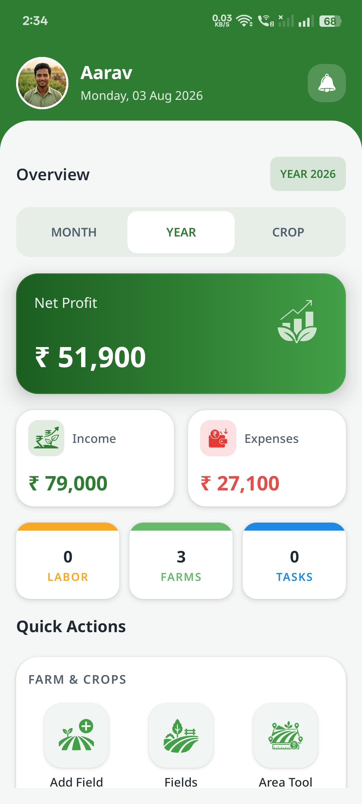

Everything Your Farm Needs.
One Simple App.
Cropora helps farmers manage labour, crops, fields, expenses and sales — even without an internet connection.
Farm Overview
View everything at one place

Expenses
Track every farming expense
Works Offline
No internet required
Built for Farmers. Designed for Simplicity.
Cropora helps you manage your farm with confidence. From labour and fields to expenses and crop sales, everything is designed to be simple, fast and completely offline.
Farmer First
Every screen is designed around the real needs of farmers, making daily farm management easier.
Works Offline
Access your records anytime without depending on an internet connection.
Private & Secure
Your farming data stays safely on your own device and remains completely under your control.
Easy to Use
A clean interface that anyone can learn quickly without technical knowledge.
Smart Reports
Monitor expenses, labour, crop sales and other farm activities with useful summaries.
Farm Focused
Everything you need for managing fields, crops, labour and finances in one simple app.
One App. Every Farm Activity.
Cropora brings every important part of farm management together, helping you stay organized from planning to harvest.
Field Management
Organize every farm field with names, area and crop information in one place.
Crop Management
Keep complete records of crops from sowing to harvest.
Labour Management
Manage workers, attendance and salary records with ease.
Expense Tracking
Record farming expenses and understand where your money is being spent.
Crop Sales
Record sales, calculate earnings and monitor farm income.
Reports & Insights
Understand your farm with simple summaries and useful reports.
Land Unit Converter
Instantly convert farm Land between Hectare, Acre, Bigha, Guntha, Are, Square Meter, Square Foot and other regional land units used across different states.
No Matter the Size of Your Farm
Whether you manage a single field or multiple farms, Cropora is built to simplify your daily farming activities with one easy-to-use app.
Individual Farmers
Easily manage your fields, crops, labour, expenses and crop sales without complicated software.
- ✔ Simple & Easy
- ✔ Offline Access
- ✔ Daily Farm Records
Family Farms
Keep every farming activity organized while working together with your family members.
- ✔ Organized Records
- ✔ Labour Tracking
- ✔ Crop Planning
Small Farm Businesses
Manage multiple fields, workers, expenses and crop sales from one organized platform.
- ✔ Multiple Fields
- ✔ Financial Tracking
- ✔ Better Productivity
A Smarter Way to Manage Your Farm
Cropora replaces manual record keeping with a simple digital experience that helps farmers save time, stay organized and make better decisions.
Have Questions?
We've Got Answers.
Find answers to the most common questions about Cropora. If you still need help, feel free to contact us.
Need More Help?
We're always happy to help you.
Yes. Cropora is designed to work completely offline. Your farm data stays available even without an internet connection.
Yes. Your information is stored locally on your device. You remain in complete control of your farm records.
Yes. Cropora lets you manage multiple fields, crops and farming activities from one place.
Yes. Cropora includes a built-in Land Area Converter supporting Hectare, Acre, Bigha, Guntha, Square Meter and many regional units.
Yes. Cropora helps you manage labour attendance, salary records and worker information easily.
Yes. Cropora is free to download and use. Additional premium features may be introduced in future updates.
Everything Your Farm Needs,
All in One App.
Manage fields, crops, labour, expenses, crop sales and much more with Cropora — the offline farm management app built for modern farmers.
download Download for Android